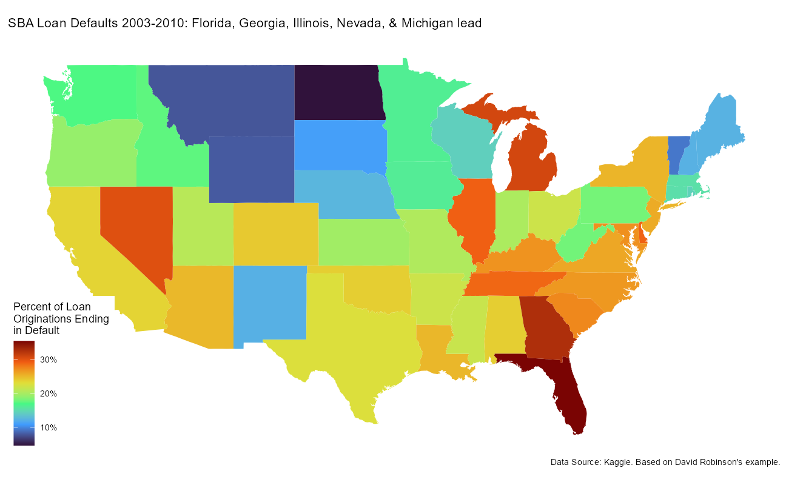
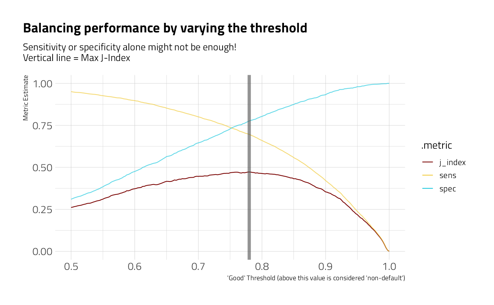
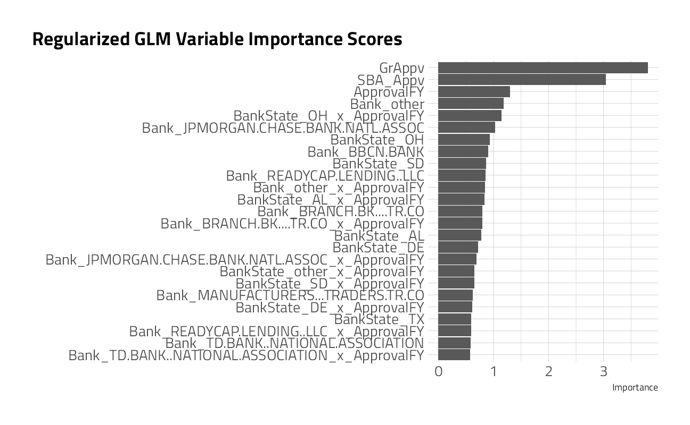
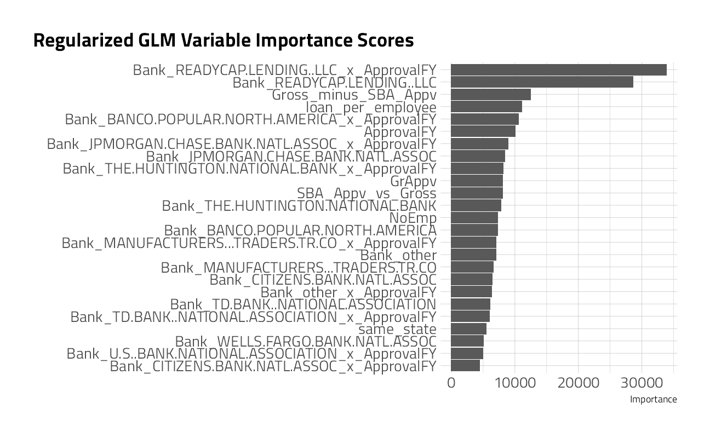

Sliced Season 1 Finale: SBA Loan Defaults
Jim Gruman
August 17, 2021
Last updated: 2021-09-08
Checks: 7 0
Knit directory: myTidyTuesday/
This reproducible R Markdown analysis was created with workflowr (version 1.6.2). The Checks tab describes the reproducibility checks that were applied when the results were created. The Past versions tab lists the development history.
Great! Since the R Markdown file has been committed to the Git repository, you know the exact version of the code that produced these results.
Great job! The global environment was empty. Objects defined in the global environment can affect the analysis in your R Markdown file in unknown ways. For reproduciblity it’s best to always run the code in an empty environment.
The command set.seed(20210907) was run prior to running the code in the R Markdown file. Setting a seed ensures that any results that rely on randomness, e.g. subsampling or permutations, are reproducible.
Great job! Recording the operating system, R version, and package versions is critical for reproducibility.
Nice! There were no cached chunks for this analysis, so you can be confident that you successfully produced the results during this run.
Great job! Using relative paths to the files within your workflowr project makes it easier to run your code on other machines.
Great! You are using Git for version control. Tracking code development and connecting the code version to the results is critical for reproducibility.
The results in this page were generated with repository version e231131. See the Past versions tab to see a history of the changes made to the R Markdown and HTML files.
Note that you need to be careful to ensure that all relevant files for the analysis have been committed to Git prior to generating the results (you can use wflow_publish or wflow_git_commit). workflowr only checks the R Markdown file, but you know if there are other scripts or data files that it depends on. Below is the status of the Git repository when the results were generated:
Ignored files:
Ignored: .Rhistory
Ignored: .Rproj.user/
Untracked files:
Untracked: catboost_info/
Untracked: data/2021-09-08/
Note that any generated files, e.g. HTML, png, CSS, etc., are not included in this status report because it is ok for generated content to have uncommitted changes.
These are the previous versions of the repository in which changes were made to the R Markdown (analysis/2021_08_17_sliced.Rmd) and HTML (docs/2021_08_17_sliced.html) files. If you’ve configured a remote Git repository (see ?wflow_git_remote), click on the hyperlinks in the table below to view the files as they were in that past version.
| File | Version | Author | Date | Message |
|---|---|---|---|---|
| Rmd | e231131 | opus1993 | 2021-09-08 | wflow_publish(“analysis/2021_08_17_sliced.Rmd”) |
| html | 7605fc7 | opus1993 | 2021-09-08 | Build site. |
| Rmd | 31a4cc9 | opus1993 | 2021-09-08 | Classification EDA titles, aspect ratios |
| html | 4e38044 | opus1993 | 2021-09-08 | Build site. |
| Rmd | 3fc8f4f | opus1993 | 2021-09-08 | Add DALEX variable importance |
| html | 379ed14 | opus1993 | 2021-09-07 | Build site. |
| Rmd | 990bb59 | opus1993 | 2021-09-07 | wflow_publish(“analysis/2021_08_17_sliced.Rmd”) |
The Season 1 Finale of #SLICED featured a challenge to predict default exposure in a portfolio of bank loans in a dataset from the U.S. Small Business Administration (SBA).

The Small Business Administration (SBA) was founded in 1953 to assist small businesses in securing loans. The argument is that, as small businesses are a primary source of employment in the United States, then helping small businesses helps with job creation, reducing unemployment. One of the ways the SBA helps small businesses is by guaranteeing bank loans. This guarantee reduces the risk to individual banks and encourages them to lend in situations that they otherwise might not. If the loan defaults, the SBA covers the amount guaranteed, and the bank suffers a loss for the remaining balance.
There have been a few small business success stories like FedEx and Apple. However, the rate of default is somewhat higher than most commercial banks would find attractive. Some economists believe the banking market works better without the assistance of the SBA. On the other hand, supporters claim that the social benefits and job creation outweigh the financial costs to the taxpayer in defaulted loans.
My capstone project in grad school a few years back involved a study of regional banks and account policies across the US financial network. Regulatory submissions to SBA, FDIC, the USDA, and even state banking authorities are a great opportunity to model for decisions for economists and finance. In this case, modeling the amount of default exposure could be useful in providing information to government policymakers or insurers.
The source data set was from the U.S. SBA loan database and includes information on whether the loan was paid off in full or if the SBA had to charge off any amount in default, and how much that amount was. More information on this data set is availble here.
SLICED is like the TV Show Chopped but for data science. The competitors get a never-before-seen dataset and two-hours to code a solution to a prediction challenge. Contestants get points for the best model plus bonus points for data visualization, votes from the audience, and more. The evaluation metric is Mean Absolute Error.
The audience is invited to participate as well. This type of problem is a big challenge. 64k of the 83k loans in the SLICED training dataset did not default at all, so show zero default amount. Separating the signal from the noise here is tough.

Clearly there is a large imbalance here between good and bad loans. This is probably a good thing for the banks, but poses an interesting issue for us because we want to ensure we are sensitive to the bad loans and are not overwhelmed by the number of good ones. One approach that we might take is to downsample the number of good loans so that the total number of them is more in line with the number of bad loans.
There are likely confounders and other feature transformations required. I also wondered whether approaching this as a classification problem first, and building a regression second might be better. Eben Esterhuizen was kind enough to share his top-scoring Python model code at Kaggle. Interestingly, this was exactly his approach.
tweetrmd::include_tweet("https://twitter.com/EbenEsterhuizen/status/1427837303423184900")Still in disbelief, but I won modeling in #SLICED #datascience championship round :) Massive thanks to @MeganRisdal and @nickwan for an amazing show and data science education. Here is my notebook using stacked models: https://t.co/nYUmZLE9AA
— Eben Esterhuizen (@EbenEsterhuizen) August 18, 2021
My plan here is to re-write his approach in R, make a number of improvements, and explain how it all works. Let’s load up R packages:
suppressPackageStartupMessages({
library(tidyverse) # clean and transform rectangular data
library(hrbrthemes) # plot theming
library(ggthemes)
library(ggforce)
library(treemapify)
library(tidymodels) # machine learning tools
library(finetune) # racing methods for accelerating hyperparameter tuning
library(discrim)
library(probably)
library(treesnip) # a boost tree adaptor for catboost and other engines
library(catboost) # our boosted tree engine
library(embed)
library(bestNormalize) # has a step that can enforce a symmetric distribution for the predictors. We’ll use this to mitigate the issue of skewed distributions.
library(themis) # ml prep tools for handling unbalanced datasets
})
source(here::here("code","_common.R"),
verbose = FALSE,
local = knitr::knit_global())
theme_set(theme_jim(base_size = 14))
#create a data directory
data_dir <- here::here("data",Sys.Date())
if (!file.exists(data_dir)) dir.create(data_dir)
# set a competition metric
mset <- metric_set(mae)
# set the competition name from the web address
competition_name <- "sliced-s01e12-championship"
zipfile <- paste0(data_dir,"/", competition_name, ".zip")
path_export <- here::here("data",Sys.Date(),paste0(competition_name,".csv"))Get the Data
A quick reminder before downloading the dataset: Go to the Kaggle web site and accept the competition terms!!!
If you pip install kaggle, there are (Windows) shell commands available to interact with Kaggle here:
# from the Kaggle api https://github.com/Kaggle/kaggle-api
# the leaderboard
shell(glue::glue('kaggle competitions leaderboard { competition_name } -s'))
# the files to download
shell(glue::glue('kaggle competitions files -c { competition_name }'))
# the command to download files
shell(glue::glue('kaggle competitions download -c { competition_name } -p { data_dir }'))
# unzip the files received
shell(glue::glue('unzip { zipfile } -d { data_dir }'))Read in the contents of the files to dataframes here. I’ve written an import function to cast the data types and create new features in the same way, both from the provided train data file as well as from the un-labeled file labeled test, that I will call competition_submission_df. In this case, the competition_submission_df appears to be a random sample selection across all years and states. We will likely discover that the competition_submission_df includes years or factor levels, like states or zip codes, that were not present in the training set.
cast_transform <- function(tbl){
tbl %>%
mutate(FranchiseCode = if_else(FranchiseCode %in% c(0,1),
"noFranchise",
"Franchise"),
NAICS2 = str_sub(NAICS, 1L, 2L), #Industry Class Hierarchy
NAICS3 = str_sub(NAICS, 1L, 3L), #Industry Class Hierarchy
NAICS4 = str_sub(NAICS, 1L, 4L), #Industry Class Hierarchy
NewExist = if_else(is.na(NewExist), "Unknown", NewExist)
) %>%
mutate(across(
c("Name",
"City",
"State",
"Zip",
"Bank",
"Sector",
"NAICS",
"BankState",
"UrbanRural",
"NewExist",
"FranchiseCode",
"NAICS2", "NAICS3", "NAICS4"
),
as_factor
)) %>%
mutate(
UrbanRural = fct_recode(
UrbanRural,
"Urban" = "1",
"Rural" = "2",
"Unknown" = "0"
),
NewExist = fct_recode(NewExist,
"Existing" = "1.0",
"New" = "2.0",
"Unknown" = "0.0"),
loan_per_employee = GrAppv / (NoEmp + 1),
SBA_Appv_vs_Gross = SBA_Appv / GrAppv,
Gross_minus_SBA_Appv = GrAppv - SBA_Appv,
Gross_minus_SBA_Appv_vs_Employee = Gross_minus_SBA_Appv / (NoEmp + 1),
same_state = State == BankState
)
}
train_df <-
read_csv(
file = glue::glue({
data_dir
}, "/train.csv"),
col_types = "ccccccccciiciiccdddd",
show_col_types = FALSE
) %>%
mutate(default_flag = as_factor(if_else(
default_amount > 0,
"default",
"nondefault"
)),
default_proportion = default_amount / GrAppv) %>%
cast_transform() %>%
dplyr::select(default_amount,
default_flag,
default_proportion,
everything())
competition_submission_df <-
read_csv(
file = glue::glue({
data_dir
}, "/test.csv"),
col_types = "ccccccccciiciiccddd",
show_col_types = FALSE
) %>%
cast_transform()Exploratory Data Analysis (EDA)
Some questions to answer upfront:
What features have missing data, and imputations may be required?
What does the outcome variable look like, in terms of imbalance?
In competition I use skimr::skim() for quick checks. We will craft much nicer plots below.
skimr::skim(train_df)The Outcome Variable
Lets characterize the default_amount as a histogram for all data in the set, and as a treemap to better understand the distributions by a few of the category factor levels.
train_df %>%
group_by(State, Sector = fct_lump(Sector, 10)) %>%
summarise(n = n(),
mean_default = mean(default_amount > 0, na.rm = TRUE),
.groups = "drop") %>%
ggplot(aes(area = n,
fill = mean_default,
label = Sector,
subgroup = State)) +
geom_treemap() +
geom_treemap_subgroup_border() +
geom_treemap_text(color = "black", place = "top", reflow = TRUE) +
geom_treemap_subgroup_text(
color = "gray40",
place = "bottomright",
fontface = "italic",
min.size = 0,
alpha = 0.3
) +
scale_fill_fermenter(
palette = "PuRd",
direction = 1,
guide = "colorsteps",
labels = scales::percent_format(accuracy = 1),
breaks = seq(0,1,0.1)
) +
labs(
fill = "Loans\nThat Default",
title = "US Small Business Admin Loans 2003-2010",
subtitle = "Box area is # of loans for sectors within ea State.\nThe vast majority of individual loans do not default.",
caption = "Data Source: Kaggle"
)
train_df %>%
dplyr::select(GrAppv, default_flag ) %>%
bind_rows(dplyr::select(competition_submission_df, GrAppv) %>% mutate(default_flag = "holdout set")) %>%
ggplot(aes(GrAppv, fill = default_flag)) +
geom_histogram(bins = 50) +
scale_x_log10(labels = scales::dollar_format()) +
labs(title = "Loans tend to fall between $10k to 1M",
fill = NULL, x = "Gross Approved Loan Value",
subtitle = "SBA must have value threshold limits")
Categorical Variables
summarize_defaults <- function(tbl){
tbl %>%
summarize(n_loans = n(),
pct_default = mean(default_amount > 0),
total_gr_appv = sum(GrAppv),
total_default_amount = sum(default_amount ),
pct_default_amount = total_default_amount / total_gr_appv,
.groups = "drop") %>%
arrange(desc(n_loans))
}
withfreq <- function(x){
tibble(x) %>%
add_count(x) %>%
mutate(combined = glue::glue("{ str_sub(x, end = 18) } ({ n })")) %>%
pull(combined)
}
plot_category <- function(tbl, category, n_categories = 7){
tbl %>%
group_by({{ category }} := withfreq(fct_lump({{ category }}, n_categories))) %>%
summarize_defaults() %>%
mutate({{ category }} := fct_reorder({{ category }}, pct_default)) %>%
ggplot(aes(pct_default, {{ category }})) +
geom_point(aes(color = pct_default_amount)) +
geom_text(aes(x = pct_default - 0.02,
label = glue::glue("$ {round(total_default_amount/10^6,0)} M")),
hjust = 1) +
scale_color_viridis_b(
name = "% of Loan Amount\nin Default",
labels = scales::percent_format(accuracy = 1),
breaks = c(0, 0.05, 0.1, 0.15),
option = "H"
) +
guides(color = guide_bins()) +
scale_x_continuous(labels = scales::percent_format(accuracy = 1)) +
expand_limits(x = 0, size = 0) +
labs(x = "% of Loans Originated that Defaulted", y = NULL,
subtitle = "(# of loans) & Total Defaulted Amount on Labels")
}
train_df %>%
plot_category(State) +
labs(title = "Florida, Illinois, New York")
train_df %>%
plot_category(City) +
labs(title = "Miami leads")
train_df %>%
plot_category(Sector) +
labs(title = "Construction leads")
train_df %>%
plot_category(Bank) +
labs(title = "BBCN is the leader")
train_df %>%
mutate(same_state = if_else(BankState == State,
"Same State",
"Different")) %>%
plot_category(same_state) +
labs(title = "Banks in States different than the Borrower")
train_df %>%
plot_category(NewExist) +
labs(title = "New Borrowers")
train_df %>%
plot_category(FranchiseCode) +
labs(title = "When they do default, Franchises aren't much different")
train_df %>%
plot_category(NAICS2) +
labs(title = "NAICS codes starting with 23")
train_df %>%
plot_category(NAICS3) +
labs(title = "NAICS codes starting with 238")
train_df %>%
plot_category(NAICS4) +
labs(title = "NAICS codes starting with 8121")
train_df %>%
plot_category(NAICS) +
labs(title = "NAICS code 722211")
train_df %>%
plot_category(UrbanRural) +
labs(title = "Urban borrowers")
train_df %>%
plot_category(Name) +
labs(title = "The bad business names")
Time Series
train_df %>%
group_by(ApprovalFY, State = fct_lump(State, 5)) %>%
summarize_defaults() %>%
ggplot(aes(ApprovalFY, pct_default, color = State)) +
geom_line(size = 2) +
scale_y_continuous(labels = scales::percent_format()) +
scale_size_continuous(labels = scales::dollar_format()) +
expand_limits(y = 0, size = 0) +
labs(x = "year approved", y = "Default Percentage",
title = "SBA Loans in the 2008 financial crisis",
size = "Loan Approvals",
caption = "Based on David Robinson @drob example")
Numeric Features
train_numeric <- train_df %>% keep(is.numeric) %>% colnames()
train_df %>%
bind_rows(competition_submission_df) %>%
select_at(all_of(train_numeric)) %>%
dplyr::select(-default_amount) %>%
pivot_longer(
cols = everything(),
names_to = "key",
values_to = "value"
) %>%
filter(!is.na(value)) %>%
ggplot(mapping = aes(value, fill = key)) +
geom_histogram(
position = "identity",
bins = 30,
show.legend = FALSE
) +
scale_y_continuous(labels = scales::comma_format(),
n.breaks = 3) +
scale_x_continuous(n.breaks = 3) +
facet_wrap( ~ key, scales = "free", ncol = 3) +
labs(
title = "Numeric Feature Histogram Distributions",
subtitle = "Training and Holdout datasets combined",
x = NULL,
y = "Count"
) +
theme(aspect.ratio = 1.3) +
theme_jim(base_size = 8)
train_df %>%
filter(default_amount > 1) %>%
select_at(all_of(train_numeric)) %>%
pivot_longer(cols = -c(default_amount, ApprovalFY),
names_to = "key",
values_to = "value") %>%
ggplot(aes(ApprovalFY, value, z = default_amount)) +
stat_summary_hex(alpha = 0.9, bins = 10) +
scale_fill_viridis_c(option = "H",labels = scales::dollar_format()) +
scale_x_continuous(n.breaks = 3) +
scale_y_continuous(n.breaks = 3) +
facet_wrap(~ key, scales = "free", ncol = 3 ) +
labs(subtitle = "Mean Default Value Where > $1",
title = "Numeric Features by Loan Origination Year",
y = NULL, fill = "Default $") +
theme(aspect.ratio = 1.3) +
theme_jim(base_size = 8)
tmwr_cols <- viridis::viridis_pal(option = "H")
train_df %>%
select_at(all_of(train_numeric)) %>%
cor() %>%
heatmap(main = "Numeric Correlations")
The highly correlated numeric variables are going to have to be dealt with, either through some sort of regularization or pre-processing.
Maps
by_state <- train_df %>%
group_by(State) %>%
summarize_defaults()
map_data("state") %>%
as_tibble() %>%
mutate(State = state.abb[match(region, str_to_lower(state.name))]) %>%
inner_join(by_state, by = "State") %>%
ggplot(aes(long, lat, group = group, fill = pct_default)) +
geom_polygon() +
theme_map() +
coord_map() +
scale_fill_viridis_c(option = "H", labels = scales::percent_format()) +
labs(title = "SBA Loan Defaults 2003-2010: Florida, Georgia, Illinois, Nevada, & Michigan lead",
fill = "Percent of Loan\nOriginations Ending\nin Default",
caption = "Data Source: Kaggle. Based on David Robinson's example.")
So, yes, we will first model to predict for the default_flag class. If it performs well, we will then go on to model the default_amount separately for the loans predicted to default.
Machine Learning: Classification
Here’s an often overlooked piece of advice for all ML practitioners, & especially newcomers:
👉 Build a non-ML baseline first.
You’ll be surprised how often you cannot easily improve a basic solution by throwing ML at it, and you’ll learn something about the problem too.
Your best alternative to any complex model isn’t “no model.” Your alternative is a simple model. I see this over and over. Before you build a Rube Goldberg model of the universe, build a brain dead simple model. THAT parsimonious piece of junk is your bogie. Out perform THAT in a way that justifies your complexity and time.
Once you’re comparing a complicated model to a parsimonious model you can intelligently discuss the “marginal benefit (or lift) from complexity.”
round(100*prop.table(table(train_df$default_flag)),1)
nondefault default
77.1 22.9 In the loan default dataset, predicting a nondefault class for every case results in 77.1% accuracy, doing nothing. Let’s call this the NULL model.
Spending the Data
We will split train_df randomly into a training portion (90%) and a labeled testing portion (10%). The training portion is then divided into 5-fold cross validation sets and stratified on the default_flag to ensure that each CV fold has some proportion of the imbalanced outcomes.
set.seed(2021)
split <- initial_split(train_df, prop = 0.9)
training <- training(split)
testing <- testing(split)
class_folds <- vfold_cv(training, v = 5, strata = default_flag )The Recipes
We are going to start by taking a survey of a handful of models that train fast, have little tuning required, and are generally interpretable. The choice of pre-processor, or tidymodels recipe() steps, transforms the dataframe into formats that machine learning algorithms can work with.
Our strategy here is to pre-process at three levels. The first, classification_rec is a raw dataset with all categorical predictors intact. The second, dummies_classification_rec tunes a threshold for lumping categorical levels together and then creates dummy variables so everything is numeric. With so many category levels, this training set could be thousands of columns wide, and sparse. There is a cardinality tradeoff here, where each additional column may not contribute much to the model. The third pre-processor, pls_classification_rec, works as a sort of supervised learning version of principal components analysis, called Partial Least Squares, that simultaneously maximize the variation in the predictors while also maximizing the relationship between those components and the outcome.
classification_rec <-
recipe(
default_flag ~ LoanNr_ChkDgt + Name + Sector + City + State + Zip +
Bank + BankState + NAICS + ApprovalFY + NoEmp +
NewExist + CreateJob + RetainedJob + FranchiseCode + UrbanRural +
DisbursementGross + GrAppv + SBA_Appv + NAICS2 + NAICS3 + NAICS4 +
loan_per_employee + SBA_Appv_vs_Gross + Gross_minus_SBA_Appv +
Gross_minus_SBA_Appv_vs_Employee + same_state,
data = training
) %>%
update_role(LoanNr_ChkDgt, new_role = "ID")
dummies_classification_rec <-
classification_rec %>%
step_novel(
Name,
Sector,
City,
State,
Zip,
Bank,
BankState,
NAICS,
NAICS2,
NAICS3,
NAICS4
) %>%
step_other(
Name,
Sector,
City,
State,
Zip,
Bank,
BankState,
NAICS,
NAICS2,
NAICS3,
NAICS4,
threshold = tune()) %>%
step_dummy(all_nominal_predictors()) %>%
step_interact(~ starts_with("Bank"):ApprovalFY) %>% # Add important interactions
step_orderNorm(all_numeric_predictors()) %>%
step_normalize(all_numeric_predictors())
pls_classification_rec <- dummies_classification_rec %>%
step_pls(all_numeric_predictors(),
num_comp = tune(),
outcome = "default_flag") %>%
step_normalize(all_numeric_predictors()) Feature Extraction
plot_validation_results <- function(recipe,
dat = train_df,
outcome = default_flag) {
recipe %>%
# Estimate any additional steps
prep() %>%
# Process the data (the validation set by default)
bake(new_data = dat) %>%
dplyr::select({{ outcome }}, starts_with("PLS")) %>%
# Create the scatterplot matrix
ggplot(aes(x = .panel_x,
y = .panel_y,
col = {{ outcome }},
fill = {{ outcome }})) +
geom_point(alpha = 0.4, size = 0.5) +
geom_autodensity(alpha = .3) +
facet_matrix(vars(-{{ outcome }}), layer.diag = 2)
}Let’s look for separation of the classes in the new, transformed features from the PLS preprocessor. Our modeling system will tune() both for the number of factors to be lumped together and for the number of PLS components.
pls_classification_rec %>%
finalize_recipe(list(num_comp = 4,
threshold = 0.01)) %>%
plot_validation_results() +
ggtitle("Partial Least Squares")
pls_classification_rec %>%
finalize_recipe(list(num_comp = 4,
threshold = 0.01)) %>%
prep() %>%
learntidymodels::plot_top_loadings(component_number <= 4,
n = 6, type = "pls") +
ggtitle("Partial Least Squares Components") +
theme(aspect.ratio = 0.9) +
theme_jim(base_size = 7)
Each component consists of combinations of the original features. Depending upon the threshold for lumping categorical levels together, the PLS pre-processing may help to separate the signal from the noise. On the other hand, we will use machine learning techniques that include regularization, another technique for dealing with having too many noisy variables.
The size of the loan and approval year drive the first PLS component. Others PLS components are driven by groups of states and a few of the banks where the loan was originated.
Baseline Model Specifications
Our modeling engines will first include a Generalized Linear Model with Regularization to constrain the number of features and constrain the out of sample error. This approach, with Lasso and Ridge penalty parameters, is sometimes called Elastic Net or GLMNET.
The second builds a discriminant analysis model that uses nonlinear features created using multivariate adaptive regression splines, or MARS. It is a non-parametric regression technique and can be seen as an extension of linear models that automatically models nonlinearities and interactions between variables. The term “MARS” is trademarked and licensed to Salford Systems. In order to avoid trademark infringements, open-source implementations of MARS are called “Earth”.
The third, regularized discriminant analysis, builds a model that estimates a multivariate distribution for the predictors separately for the data in each class.
logistic_reg_glm_spec <-
logistic_reg(penalty = tune(),
mixture = tune()) %>%
set_engine('glmnet')
fda_spec <-
discrim_flexible(prod_degree = tune()) %>%
set_engine('earth')
rda_spec <-
discrim_regularized(frac_common_cov = tune(),
frac_identity = tune()) %>%
set_engine('klaR')GLM Model Tune
We are going to quickly race through a grid of 6 parameter combinations with workflowsets. I will set reasonable parameters ranges in advance for the categorical variable lumping and the number of PLS components.
ctrl <- control_race(parallel_over = "everything",
save_pred = TRUE)
all_cores <- parallelly::availableCores(omit = 1)
all_cores
future::plan("multisession", workers = all_cores) # on Windowsworkflows <- workflow_set(
preproc = list(factor = dummies_classification_rec,
pls = pls_classification_rec),
models = list(glmnet = logistic_reg_glm_spec,
fda = fda_spec,
rda = rda_spec)
)
factor_glmnet_params <- workflows %>%
extract_workflow("factor_glmnet") %>%
parameters() %>%
update(penalty = penalty(),
mixture = mixture(),
threshold = threshold(range = c(0.1, 0.005)))
factor_fda_params <- workflows %>%
extract_workflow("factor_fda") %>%
parameters() %>%
update(prod_degree = prod_degree(),
threshold = threshold(range = c(0.1, 0.005)))
factor_rda_params <- workflows %>%
extract_workflow("factor_rda") %>%
parameters() %>%
update(frac_common_cov = frac_common_cov(),
frac_identity = frac_identity(),
threshold = threshold(range = c(0.1, 0.005)))
pls_glmnet_params <- workflows %>%
extract_workflow("pls_glmnet") %>%
parameters() %>%
update(penalty = penalty(),
mixture = mixture(),
threshold = threshold(range = c(0.1, 0.005)),
num_comp = num_comp(range = c(6L,11L)))
pls_fda_params <- workflows %>%
extract_workflow("pls_fda") %>%
parameters() %>%
update(prod_degree = prod_degree(),
threshold = threshold(range = c(0.1, 0.005)),
num_comp = num_comp(range = c(6L,11L)))
pls_rda_params <- workflows %>%
extract_workflow("pls_rda") %>%
parameters() %>%
update(frac_common_cov = frac_common_cov(),
frac_identity = frac_identity(),
threshold = threshold(range = c(0.1, 0.005)),
num_comp = num_comp(range = c(6L,11L)))
workflows <- workflows %>%
option_add(param_info = factor_glmnet_params, id = "factor_glmnet") %>%
option_add(param_info = factor_fda_params, id = "factor_fda") %>%
option_add(param_info = factor_rda_params, id = "factor_rda") %>%
option_add(param_info = pls_glmnet_params, id = "pls_glmnet") %>%
option_add(param_info = pls_fda_params, id = "pls_fda") %>%
option_add(param_info = pls_rda_params, id = "pls_rda") We then tune each of the models, running across all validation folds for every grid combination. We are using a time-saving technique here with tune_race_anova(), where poor performing candidates are dropped. For 5-fold cross validation, the reduction in time is as much as 40%.
default_res <- workflows %>%
workflow_map(
fn = "tune_race_anova",
verbose = TRUE,
seed = 2021,
resamples = class_folds,
grid = 21,
control = ctrl,
metrics = metric_set(mn_log_loss)
)i 1 of 6 tuning: factor_glmnet
v 1 of 6 tuning: factor_glmnet (1h 1m 15.9s)
i 2 of 6 tuning: factor_fda
v 2 of 6 tuning: factor_fda (57m 56.7s)
i 3 of 6 tuning: factor_rda
v 3 of 6 tuning: factor_rda (13m 13.9s)
i 4 of 6 tuning: pls_glmnet
v 4 of 6 tuning: pls_glmnet (9m 10.9s)
i 5 of 6 tuning: pls_fda
v 5 of 6 tuning: pls_fda (10m 18.3s)
i 6 of 6 tuning: pls_rda
v 6 of 6 tuning: pls_rda (11m 49.3s)
rankings <-
rank_results(default_res, select_best = TRUE) %>%
mutate(method = map_chr(wflow_id, ~ str_split(.x, "_", simplify = TRUE)[1]))
filter(rankings, rank <= 5) %>% dplyr::select(rank, mean, model, method)rankings %>%
ggplot(aes(x = rank, y = mean, pch = method, col = model)) +
geom_point(cex = 3) +
theme(legend.position = "right") +
labs(y = "Mean Log Loss")
The best of the best were the regularlized glm with the simple dummy preprocessor. We can visualize the benefit of tune_race_anova(), where only the best combinations were run through the entire tuning routine.
plot_race(default_res %>% extract_workflow_set_result("factor_glmnet"))
Let’s extract the hyperparameter settings for that top model.
(best_params <- default_res %>%
extract_workflow_set_result("factor_glmnet") %>%
select_best())best_wf <- default_res %>%
extract_workflow("factor_glmnet") %>%
finalize_workflow(best_params)And take a close look at the classification performance of that best glmnet model on the 10% testing data that was held out.
lastFit <- last_fit(best_wf, split, metrics = metric_set(mn_log_loss))
collect_metrics(lastFit) Note here the the mean log loss classification error is comparable to that of the cross validation figure above, so we have more confidence that the model works on unseen data. Let’s move forward then.
Fit
Recall that our original dataset was imbalanced. There are far more non-defaults than defaults. Because of this, dialing in the cutoff, balancing between specificity and sensitivity, warrants more attention. Let’s fit the best model on all of the training data (omitting the cross validation folds).
glm_classification_fit <- fit(best_wf, data = training)Let’s simply predict the probabilities on the labeled testing data.
lending_test_pred <- glm_classification_fit %>%
predict(new_data = testing, type = "prob") %>%
bind_cols(testing)With our class probabilities in hand, we can use make_two_class_pred() to convert these probabilities into hard predictions using a threshold. A threshold of 0.5 just says that if the predicted probability is above 0.5, then classify this prediction as a “nondefault” loan, otherwise, default.
lending_test_pred %>%
mutate(.pred = make_two_class_pred(.pred_nondefault, levels(default_flag), threshold = .5)) %>%
dplyr::select(default_flag, contains(".pred")) %>%
conf_mat(truth = default_flag, estimate = .pred) %>%
autoplot() +
labs(title = "GLM Confusion Matrix at 0.5 Cutoff")
With a 0.5 threshold, almost all of the loans were predicted as “nondefault”. Perhaps this has something to do with the large class imbalance. On the other hand, the bank might want to be more stringent with what is classified as a “good” loan, and might require a probability of 0.75 as the threshold.
lending_test_pred %>%
mutate(.pred = make_two_class_pred(.pred_nondefault, levels(default_flag), threshold = .75)) %>%
dplyr::select(default_flag, contains(".pred")) %>%
conf_mat(truth = default_flag, estimate = .pred) %>%
autoplot() +
labs(title = "GLM Confusion Matrix at 0.75 Cutoff")
In this case, many the bad loans were correctly classified as bad, but more of the good loans were also misclassified as bad now. There is a tradeoff here, which can be somewhat captured by the metrics sensitivity and specificity.
In this example, as we increased specificity, we lowered sensitivity. It would be nice to have some combination of these metrics to represent this tradeoff. Luckily, j_index is exactly that.
Now, this is not the only way to optimize things. If you care about low false positives, you might be more interested in keeping sensitivity high, and this wouldn’t be the best way to tackle this problem. There are other ways to weigh economic consequences. For now, let’s see how we can use probably to optimize the j_index.
With ggplot2, we can easily visualize this varying performance to find our optimal threshold for maximizing j_index.
threshold_data <- lending_test_pred %>%
threshold_perf(default_flag,
.pred_nondefault,
thresholds = seq(0.5, 1, by = 0.0025)) %>%
filter(.metric != "distance") %>%
mutate(group = case_when(
.metric == "sens" | .metric == "spec" ~ "1",
TRUE ~ "2"
))
max_j_index_threshold <- threshold_data %>%
filter(.metric == "j_index") %>%
filter(.estimate == max(.estimate)) %>%
pull(.threshold)
ggplot(threshold_data,
aes(
x = .threshold,
y = .estimate,
color = .metric,
alpha = group
)) +
geom_line() +
scale_alpha_manual(values = c(.7, 1), guide = "none") +
geom_vline(xintercept = max_j_index_threshold,
alpha = .6, size = 2,
color = "grey30") +
labs(
x = "'Good' Threshold (above this value is considered 'non-default')",
y = "Metric Estimate",
title = "Balancing performance by varying the threshold",
subtitle = "Sensitivity or specificity alone might not be enough!\nVertical line = Max J-Index"
)
From this visual, the optimal threshold is exactly 0.78. As an interesting view, let’s run that GLM model on all of the train_df file with the new cutoff.
augment(glm_classification_fit, train_df, type = "prob") %>%
mutate(.pred = make_two_class_pred(.pred_nondefault,
levels(default_flag),
threshold = max_j_index_threshold)) %>%
conf_mat(truth = default_flag, estimate = .pred_class) %>%
autoplot() +
labs(title = "GLM Confusion Matrix on Entire Training Set",
subtitle = glue::glue("{ augment(glm_classification_fit, train_df, type = 'prob') %>% mutate(.pred = make_two_class_pred(.pred_nondefault, levels(default_flag), threshold = max_j_index_threshold)) %>% accuracy(truth = default_flag, estimate = .pred_class) %>% pull(.estimate) %>% round(2)*100 }% ", "Accuracy with regularized general linear model.\nOnly 4 accuracy points better than the NULL model."))
After all of that work, the results are disappointing, as the accuracy is not much better than the NULL model.
glm_classification_fit %>%
extract_fit_parsnip() %>%
vip::vip(metric = "mn_log_loss", num_features = 25L) +
labs(title = "Regularized GLM Variable Importance Scores")
Let’s use the insights gained above, including the variable importance scores, to build a better boosted model.
Catboost Model Tune
Catboost is a high-performance open source library for gradient boosting on decision trees. The algorithm has advantages in automatically handling deep categorical and hieararchies of categorical features and leveraging the residuals of the weak learners to boost additional rounds of model training. The catboost specification requires five tuning parameters, so it often takes more time to find optimal combinations.
catboost_classification_spec <- boost_tree(
trees = tune(),
mtry = tune(),
min_n = tune(),
learn_rate = tune(),
tree_depth = tune()
) %>%
set_engine("catboost") %>%
set_mode("classification") %>%
step_novel(all_nominal_predictors())Given the variable importance scores above, let’s build a new pre-processor recipe().
catboost_class_rec <- recipe(
default_flag ~ GrAppv + SBA_Appv + ApprovalFY + Bank + BankState +
Name + NAICS + NAICS2 + NAICS3 + NAICS4 + UrbanRural + State + City,
data = training
) Let’s set boundaries for the hyper-parameter search and build a grid of possible values.
catboost_classification_wf <-
workflow() %>%
add_recipe(catboost_class_rec) %>%
add_model(catboost_classification_spec)
set.seed(2021)
(race_grid <-
grid_latin_hypercube(
finalize(mtry(), catboost_class_rec %>% prep() %>% juice()),
trees(range = c(500,1500)),
learn_rate(range = c(-2, -1)),
tree_depth(range = c(3L, 10L)),
min_n(range = c(10L, 40L)),
size = 5
))catboost_classification_rs <- tune_race_anova(
catboost_classification_wf,
resamples = class_folds,
grid = race_grid,
metrics = metric_set(mn_log_loss),
control = control_race(verbose = TRUE,
save_pred = TRUE,
save_workflow = TRUE,
extract = extract_model,
parallel_over = "resamples")
)
autoplot(catboost_classification_rs)
collect_metrics(catboost_classification_rs) %>%
dplyr::select(mtry,
trees,
min_n,
tree_depth,
learn_rate,
mn_log_loss = mean) %>%
arrange(mn_log_loss)After modeling on 5 resample sets for every combination of parameters, we collect metrics on the model’s performance on the samples of data held out in cross validation. This is a substantial improvement.
Performance Checks
catboost_classification_best_wf <-
catboost_classification_wf %>%
finalize_workflow(select_best(catboost_classification_rs))
catboost_classification_last_fit <-
catboost_classification_best_wf %>%
last_fit(split)
collect_metrics(catboost_classification_last_fit)The accuracy and area under the roc curve are moving in the right direction, but 81% is not much better than the 80% that we achieved with the GLM PLS model above.
collect_predictions(catboost_classification_last_fit) %>%
conf_mat(default_flag, .pred_class) %>%
autoplot() +
labs(title = "Confusion Matrix on Resamples Held Out")
Here again, the algorithm is predicting “nondefault” when it should be finding defaults. Let’s press ahead explore a more suitable j_index.
classification_fit <- fit(catboost_classification_best_wf,
data = training)
lending_test_pred <- classification_fit %>%
predict(new_data = testing, type = "prob") %>%
bind_cols(testing)
threshold_data <- lending_test_pred %>%
threshold_perf(default_flag,
.pred_nondefault,
thresholds = seq(0.5, 1, by = 0.0025)) %>%
filter(.metric != "distance") %>%
mutate(group = case_when(
.metric == "sens" | .metric == "spec" ~ "1",
TRUE ~ "2"
))
max_j_index_threshold <- threshold_data %>%
filter(.metric == "j_index") %>%
filter(.estimate == max(.estimate)) %>%
pull(.threshold)
ggplot(threshold_data,
aes(
x = .threshold,
y = .estimate,
color = .metric,
alpha = group
)) +
geom_line() +
scale_color_viridis_d(end = 0.9) +
scale_alpha_manual(values = c(.4, 1), guide = "none") +
geom_vline(xintercept = max_j_index_threshold,
alpha = .6,
color = "grey30") +
labs(
x = "'Good' Threshold\n(above this value is considered 'good')",
y = "Metric Estimate",
title = "Balancing performance by varying the threshold",
subtitle = "Sensitivity or specificity alone might not be enough!\nVertical line = Max J-Index"
)
From this visual, the optimal threshold is exactly 0.785. As an interesting view, let’s run that GLM model on all of the train_df file with the new cutoff.
augment(classification_fit, train_df, type = "prob") %>%
mutate(.pred = make_two_class_pred(.pred_nondefault,
levels(default_flag),
threshold = max_j_index_threshold)) %>%
conf_mat(truth = default_flag, estimate = .pred_class) %>%
autoplot() +
labs(title = "Catboost Confusion Matrix on Entire Training Set",
subtitle = glue::glue("{ augment(classification_fit, train_df, type = 'prob') %>% mutate(.pred = make_two_class_pred(.pred_nondefault, levels(default_flag), threshold = max_j_index_threshold)) %>% accuracy(truth = default_flag, estimate = .pred_class) %>% pull(.estimate) %>% round(2)*100 }% ", "Accuracy with catboost classification model.\nMuch better than the NULL model."))
Good enough to move forward. Loans predicted in the classifier to default will be pushed through the regression model below.
Variable Importance
Let’s look at the features that contributed the most to this classification model.
classification_fit %>%
extract_fit_engine() %>%
catboost.get_feature_importance(pool = NULL,
type = 'FeatureImportance',
thread_count = -1) %>%
as_tibble(rownames = "Feature") %>%
mutate(Feature = fct_reorder(Feature, V1)) %>%
ggplot(aes(V1, Feature)) +
geom_col() +
labs(title = "Catboost SBA Default Classification Feature Importance",
y = NULL, x = NULL)
The interaction feature that built by binding the bank to the approval year ended up as the most important feature, and the second most important is the ration between SBA_Approval value and the Gross Loan value.
Machine Learning: Regression
👉 Build a non-ML baseline first.
Recall that our goal is to predict the default_amount. For our NULL model, if we apply our classifier above, and then simply take the mean of all default_amounts, the Mean Average Error is:
augment(classification_fit, train_df) %>%
mutate(.pred_default_amount = if_else(default_flag == "default", default_amount,0)) %>%
filter(.pred_class == "default") %>%
mutate(.pred_mean = mean(.pred_default_amount)) %>%
mae(truth = default_amount, estimate = .pred_mean) As an aside: the train_df we used above contains 51 loans where the default_amount was greater than the Loan Approval amount. Most of them are small value loans, for which there are thousands of others in the dataset.
EDA
Let’s make more exploratory plots to learn what features might yield good numeric predictions.
train_df_regression <- augment(classification_fit, train_df) %>%
filter(.pred_class == "default")
summarize_default_amounts <- function(tbl){
tbl %>%
summarize(n_loans = n(),
mean_default = mean(default_amount),
total_gr_appv = sum(GrAppv),
total_default_amount = sum(default_amount ),
pct_default_amount = total_default_amount / total_gr_appv,
.groups = "drop") %>%
arrange(desc(n_loans))
}
plot_category_amounts <- function(tbl, category, n_categories = 7){
tbl %>%
group_by({{ category }} := withfreq(fct_lump({{ category }}, n_categories))) %>%
summarize_default_amounts() %>%
mutate({{ category }} := fct_reorder({{ category }}, mean_default)) %>%
ggplot(aes(mean_default, {{ category }})) +
geom_point(aes(color = pct_default_amount,
size = pct_default_amount)) +
geom_text(aes(x = mean_default - 6000,
label = glue::glue("$ {round(total_default_amount/10^6,0)} M")),
hjust = 1) +
scale_color_viridis_b(
name = "% of Loan Amount\nin Default",
labels = scales::percent_format(accuracy = 1),
breaks = seq(0,1,0.1),
option = "H"
) +
scale_size_binned(
name = "% of Loan\nin Default",
labels = scales::percent_format(accuracy = 1),
breaks = seq(0,1,0.1),
guide = "none"
) +
guides(color = guide_bins()) +
scale_x_continuous(labels = scales::dollar_format()) +
expand_limits(x = 0, size = 0) +
labs(x = "Mean Value of the Defaults", y = NULL,
title = "US Small Business Administration Loans that defaulted 2003-2010",
subtitle = "# of loans in parenthesis and Total Defaulted $ on Labels")
}
train_df_regression %>%
plot_category_amounts(State) +
labs(title = "When they do default, Arizona has the highest mean Default Value")
train_df_regression %>%
plot_category_amounts(City) +
labs(title = "When they do default, Phoenix has the highest mean Default Value")
train_df_regression %>%
plot_category_amounts(Sector) +
labs(title = "When they do default, Accomodation have the highest mean Default Value")
train_df_regression %>%
plot_category_amounts(Bank) +
labs(title = "When they do default, ReadyCap Lending has the highest mean Default Value")
train_df_regression %>%
plot_category_amounts(NewExist) +
labs(title = "When they do default, Unknown have the highest mean Default Value")
train_df_regression %>%
plot_category_amounts(FranchiseCode) +
labs(title = "When they do default, Franchises have mean Default Value")
train_df_regression %>%
plot_category_amounts(NAICS2) +
labs(title = "When they do default, NAICS group 72 have mean Default Value")
train_df_regression %>%
plot_category_amounts(NAICS3) +
labs(title = "When they do default, NAICS group 722 have mean Default Value")
train_df_regression %>%
plot_category_amounts(NAICS4) +
labs(title = "When they do default, NAICS group 7222 have mean Default Value")
train_df_regression %>%
plot_category_amounts(NAICS) +
labs(title = "When they do default, NAICS group 722211 have mean Default Value")
train_df_regression %>%
plot_category_amounts(UrbanRural) +
labs(title = "When they do default, Unknown businesses have the highest mean Default Value")
train_df_regression %>%
plot_category_amounts(Name) +
labs(title = "When they do default, Domino's Pizza have the highest mean Default Value")
train_df_regression %>%
select_at(all_of(train_numeric)) %>%
cor() %>%
heatmap(main = "Numeric Correlations")
As with the classification, the regression will rely heavily on categorical features, and some of the numeric features are highly correlated with one another.
We will use 5-fold cross validation and stratify on the default_amount this time.
set.seed(2021)
regression_split <- initial_split(augment(classification_fit, train_df) %>%
filter(.pred_class == "default") ,
prop = 0.9)
regression_training <- training(split)
regression_testing <- testing(split)
(regression_folds <-
vfold_cv(
regression_training,
v = 5,
strata = default_amount
))The Recipe
For the regression, our outcome variable is the default_amount. All other features are the same as above.
regression_rec <- recipe(
default_amount ~ LoanNr_ChkDgt + Name + Sector + City + State +
Bank + NAICS + ApprovalFY + NoEmp +
NewExist + CreateJob + RetainedJob + FranchiseCode + UrbanRural +
DisbursementGross + GrAppv + SBA_Appv + NAICS2 + NAICS3 + NAICS4 +
loan_per_employee + SBA_Appv_vs_Gross + Gross_minus_SBA_Appv +
Gross_minus_SBA_Appv_vs_Employee + same_state ,
data = regression_training
) %>%
update_role(LoanNr_ChkDgt, new_role = "ID") %>%
step_zv(all_numeric_predictors()) %>%
step_novel(
Name,
Sector,
City,
State,
Bank,
NAICS,
NAICS2,
NAICS3,
NAICS4 ) %>%
step_other(all_nominal_predictors(), threshold = tune::tune()) %>%
step_dummy(all_nominal_predictors()) %>%
step_interact(~ starts_with("Bank"):ApprovalFY) %>% # Add important interactions
step_orderNorm(all_numeric_predictors()) %>%
step_normalize(all_numeric_predictors()) Linear Regression
linear_reg_lm_spec <-
linear_reg(penalty = tune(),
mixture = tune()) %>%
set_engine('glmnet')
linear_regression_wf <-
workflow() %>%
add_recipe(regression_rec) %>%
add_model(linear_reg_lm_spec)linear_regression_rs <- tune_race_anova(
linear_regression_wf,
resamples = regression_folds,
grid = 30,
metrics = mset,
control = control_race(verbose = TRUE,
save_pred = TRUE,
save_workflow = TRUE,
extract = extract_model,
parallel_over = "everything")
)
collect_metrics(linear_regression_rs) %>%
arrange(mean)linear_regression_best_wf <-
linear_regression_wf %>%
finalize_workflow(select_best(linear_regression_rs))
glm_regression_fit <- fit(linear_regression_best_wf, data = regression_training)
glm_regression_fit %>%
extract_fit_parsnip() %>%
vip::vip(metric = "mae", num_features = 25L) +
labs(title = "Regularized GLM Variable Importance Scores")
Linear regression yields an Mean Average Error on cross validation samples held out that is about 1/3 less than the NULL model.
Catboost
Much like above, but now for regression.
catboost_regression_rec <- recipe(
default_amount ~ LoanNr_ChkDgt + Name + Sector + City + State +
Bank + NAICS + ApprovalFY + NoEmp +
NewExist + CreateJob + RetainedJob + FranchiseCode + UrbanRural +
DisbursementGross + GrAppv + SBA_Appv + NAICS2 + NAICS3 + NAICS4 +
loan_per_employee + SBA_Appv_vs_Gross + Gross_minus_SBA_Appv +
Gross_minus_SBA_Appv_vs_Employee + same_state ,
data = regression_training
) %>%
update_role(LoanNr_ChkDgt, new_role = "ID") %>%
step_zv(all_numeric_predictors())
catboost_regression_spec <- boost_tree(trees = tune(),
mtry = tune(),
min_n = tune(),
learn_rate = tune(),
tree_depth = tune()) %>%
set_engine("catboost") %>%
set_mode("regression")catboost_regression_wf <-
workflow() %>%
add_recipe(catboost_regression_rec) %>%
add_model(catboost_regression_spec)
set.seed(2021)
race_grid <-
grid_latin_hypercube(
finalize(mtry(), catboost_regression_rec %>% prep() %>% juice()),
trees(range = c(500,1800)),
learn_rate(range = c(-2, -1)),
tree_depth(range = c(6L, 12L)),
min_n(range = c(10L, 45L)),
size = 15
)catboost_regression_rs <- tune_race_anova(
catboost_regression_wf,
resamples = regression_folds,
grid = race_grid,
metrics = mset,
control = control_race(verbose = FALSE,
save_pred = FALSE,
save_workflow = TRUE,
extract = extract_model,
parallel_over = "everything")
)
autoplot(catboost_regression_rs)
collect_metrics(catboost_regression_rs) %>%
select(mtry,
trees,
min_n,
tree_depth,
learn_rate,
"MAE" = mean) %>%
arrange(MAE)Not bad. Let’s make a final fit at these hyperparameter settings.
catboost_regression_best_wf <-
catboost_regression_wf %>%
finalize_workflow(select_best(catboost_regression_rs))
regression_fit <- fit(catboost_regression_best_wf,
data = augment(classification_fit, train_df) %>%
filter(.pred_class == "default"))Performance Checks
First, a Mean Absolute Error on the labeled testing data that was held out:
augment(regression_fit, augment(classification_fit, testing)) %>%
mutate(.pred = if_else(default_flag == "default", .pred,0)) %>%
mae(truth = default_amount, estimate = .pred) Next, a MAE on the predictions on training, to assess whether we have over-fit:
augment(regression_fit, augment(classification_fit, training)) %>%
mutate(.pred = if_else(default_flag == "default", .pred,0)) %>%
mae(truth = default_amount, estimate = .pred) Yep, we did. Given more time, increasing the number of folds and adding more repeats would help resolve this. A visual of our predictions of default_amounts versus the truth:
augment(regression_fit, augment(classification_fit, train_df)) %>%
mutate(.pred = if_else(default_flag == "default", .pred, 0)) %>%
ggplot(aes(default_amount, .pred)) +
geom_point(alpha = 0.2, color = "blue") +
geom_abline(slope = 1, color = "red", alpha = 0.5) +
scale_x_continuous(labels = scales::dollar) +
scale_y_continuous(labels = scales::dollar) +
labs(title = "Catboost Model Performance",
x = "Truth",
y = "Prediction")
Variable Importance
I like to come back to either these scores, or partial dependence plots, to be able to tell the story of what the model is doing and ask questions about the incoming data sample. If, for example, the SBA changes policies like the Approval thresholds, we would certainly expect the model to move dramatially.
vip_regressor <-
DALEXtra::explain_tidymodels(
regression_fit,
data = augment(regression_fit, augment(classification_fit, train_df)) %>%
mutate(.pred = if_else(default_flag == "default", .pred, 0)) %>%
select(-default_amount),
y = augment(regression_fit, augment(classification_fit, train_df)) %>%
mutate(.pred = if_else(default_flag == "default", .pred, 0)) %>%
select(default_amount),
label = "Catboost Regression",
verbose = FALSE
) %>%
DALEX::model_parts()
ggplot_imp(vip_regressor) +
theme(aspect.ratio = 1.2) +
labs(title = "SBA Default Amount Regression Feature Importance")
With all models built and fit, we can now pipeline the whole process for the holdout and make the Kaggle submission.
shell(glue::glue('kaggle competitions submit -c { competition_name } -f { path_export } -m "Catboost with advanced preprocessing model 2"'))
sessionInfo()R version 4.1.1 (2021-08-10)
Platform: x86_64-w64-mingw32/x64 (64-bit)
Running under: Windows 10 x64 (build 19043)
Matrix products: default
locale:
[1] LC_COLLATE=English_United States.1252
[2] LC_CTYPE=English_United States.1252
[3] LC_MONETARY=English_United States.1252
[4] LC_NUMERIC=C
[5] LC_TIME=English_United States.1252
attached base packages:
[1] stats graphics grDevices utils datasets methods base
other attached packages:
[1] glmnet_4.1-2 Matrix_1.3-4 vctrs_0.3.8
[4] rlang_0.4.11 themis_0.1.4 bestNormalize_1.8.1
[7] embed_0.1.4.9000 catboost_0.26 treesnip_0.1.0.9000
[10] probably_0.0.6 discrim_0.1.3 finetune_0.1.0
[13] yardstick_0.0.8 workflowsets_0.1.0 workflows_0.2.3
[16] tune_0.1.6 rsample_0.1.0 recipes_0.1.16
[19] parsnip_0.1.7.900 modeldata_0.1.1 infer_1.0.0
[22] dials_0.0.9.9000 scales_1.1.1 broom_0.7.9
[25] tidymodels_0.1.3 treemapify_2.5.5 ggforce_0.3.3
[28] ggthemes_4.2.4 hrbrthemes_0.8.0 forcats_0.5.1
[31] stringr_1.4.0 dplyr_1.0.7 purrr_0.3.4
[34] readr_2.0.1 tidyr_1.1.3 tibble_3.1.4
[37] ggplot2_3.3.5 tidyverse_1.3.1 workflowr_1.6.2
loaded via a namespace (and not attached):
[1] DALEXtra_2.1.1 ragg_1.1.3
[3] bit64_4.0.5 knitr_1.33
[5] styler_1.5.1 data.table_1.14.0
[7] rpart_4.1-15 hardhat_0.1.6
[9] doParallel_1.0.16 generics_0.1.0
[11] GPfit_1.0-8 usethis_2.0.1
[13] mixOmics_6.16.2 RANN_2.6.1
[15] future_1.22.1 ggfittext_0.9.1
[17] conflicted_1.0.4 tensorflow_2.6.0
[19] bit_4.0.4 tzdb_0.1.2
[21] tweetrmd_0.0.9 xml2_1.3.2
[23] lubridate_1.7.10 httpuv_1.6.2
[25] assertthat_0.2.1 viridis_0.6.1
[27] gower_0.2.2 xfun_0.25
[29] hms_1.1.0 jquerylib_0.1.4
[31] evaluate_0.14 promises_1.2.0.1
[33] fansi_0.5.0 dbplyr_2.1.1
[35] readxl_1.3.1 igraph_1.2.6
[37] DBI_1.1.1 rARPACK_0.11-0
[39] ellipsis_0.3.2 RSpectra_0.16-0
[41] backports_1.2.1 prismatic_1.0.0
[43] here_1.0.1 cachem_1.0.6
[45] withr_2.4.2 checkmate_2.0.0
[47] vroom_1.5.4 crayon_1.4.1
[49] ellipse_0.4.2 pkgconfig_2.0.3
[51] labeling_0.4.2 tweenr_1.0.2
[53] nnet_7.3-16 globals_0.14.0
[55] lifecycle_1.0.0 sysfonts_0.8.5
[57] extrafontdb_1.0 ingredients_2.2.0
[59] unbalanced_2.0 modelr_0.1.8
[61] cellranger_1.1.0 rprojroot_2.0.2
[63] polyclip_1.10-0 matrixStats_0.60.1
[65] rngtools_1.5 showtextdb_3.0
[67] reprex_2.0.1 base64enc_0.1-3
[69] whisker_0.4 png_0.1-7
[71] viridisLite_0.4.0 ROSE_0.0-4
[73] pROC_1.18.0 mlr_2.19.0
[75] doRNG_1.8.2 shape_1.4.6
[77] parallelly_1.27.0 magrittr_2.0.1
[79] ParamHelpers_1.14 plyr_1.8.6
[81] hexbin_1.28.2 compiler_4.1.1
[83] RColorBrewer_1.1-2 cli_3.0.1
[85] DiceDesign_1.9 listenv_0.8.0
[87] MASS_7.3-54 tidyselect_1.1.1
[89] stringi_1.7.4 textshaping_0.3.5
[91] butcher_0.1.5 highr_0.9
[93] yaml_2.2.1 ggrepel_0.9.1
[95] grid_4.1.1 sass_0.4.0
[97] fastmatch_1.1-3 tools_4.1.1
[99] future.apply_1.8.1 parallel_4.1.1
[101] rstudioapi_0.13 foreach_1.5.1
[103] git2r_0.28.0 gridExtra_2.3
[105] showtext_0.9-4 prodlim_2019.11.13
[107] farver_2.1.0 digest_0.6.27
[109] FNN_1.1.3 lava_1.6.10
[111] proto_1.0.0 nortest_1.0-4
[113] Rcpp_1.0.7 later_1.3.0
[115] httr_1.4.2 gdtools_0.2.3
[117] learntidymodels_0.0.0.9001 colorspace_2.0-2
[119] rvest_1.0.1 fs_1.5.0
[121] reticulate_1.20 splines_4.1.1
[123] uwot_0.1.10 vip_0.3.2
[125] mapproj_1.2.7 systemfonts_1.0.2
[127] jsonlite_1.7.2 BBmisc_1.11
[129] corpcor_1.6.9 timeDate_3043.102
[131] zeallot_0.1.0 keras_2.6.0
[133] DALEX_2.3.0 ipred_0.9-11
[135] R6_2.5.1 lhs_1.1.1
[137] pillar_1.6.2 htmltools_0.5.2
[139] glue_1.4.2 fastmap_1.1.0
[141] BiocParallel_1.26.1 class_7.3-19
[143] codetools_0.2-18 maps_3.3.0
[145] furrr_0.2.3 utf8_1.2.2
[147] lattice_0.20-44 bslib_0.3.0
[149] curl_4.3.2 tfruns_1.5.0
[151] Rttf2pt1_1.3.9 survival_3.2-11
[153] parallelMap_1.5.1 rmarkdown_2.10
[155] munsell_0.5.0 iterators_1.0.13
[157] haven_2.4.3 reshape2_1.4.4
[159] gtable_0.3.0 emojifont_0.5.5
[161] extrafont_0.17